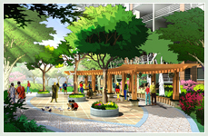

以社区关系的重建与自然生态的再生为目的，强调对传统邻里关系 恢复与生态环境的提升。打造生态环保，健康亲切，人性化的高质量住 宅小区。 |
 | |
| 1.人性化：在充分把握场所精神，历史文脉，人体尺度的基础上， 最大限度的满足区域功能和管理的要求，注重景观形态对人的心理感觉 的影响，充分体现人性化的居住环境概念。 | ||
| 2.高品质：设计标准高要求，高层次高品味，突出景观的生态效 益，确保品质和格调，营造温馨的工作和生活环境，形成优雅美观大 方，和谐的个性化生活空间，再现大自然风景。使人们健康、尊贵、从容、优雅，自然地生活。 | ||
| 3.自然性：设计注重体现自然和谐的自然园林景观，在满足功能性的前提下，尺度强调亲切宜人，并适当地将具 有传统中国园林中曲径通幽，小中见大等手法融于其中，营造良好自然的居住环境，以加强人与环境之间地沟通和交 流。 | ||
| 尊重环境，设计结合自然，做到环境、建筑与自然和谐共生。 以人为本，造就森林式生态、优美的高质量的生活环境。 森林式生态居住小区，暖风中的阳光林地，原生、翠绿、动感、缤纷色彩。人居与环境和谐共生，城市中的生态 绿岛，山林中的家。 |
||
| 1.在充分分析现有用地及规划原则的前提下，采用自然式园林的园林布局，自由，随意，丛林，阳光林地，融功 能，景观，文化于一体。 | ||
| 2.分析楼盘和潜在业主的定位，根据当地的文化特点和城市的总体规划设计符合未来潮流又适合现在人群的景观 环境，生态、自然、原生、翠绿。 | ||
| 3.综合运用古典主义与现代简约主义相结合的优秀思想和设计手法，将自然的美感重现于城市中，重建城市中的 生态绿岛，营造喧哗城市中的世外桃源。 |
||
| 4.缓坡草地，阳光林地，动感，缤纷色彩，自然风格尽情演绎，完美再体现于自然式风景园林。 | ||
| TOP | ||